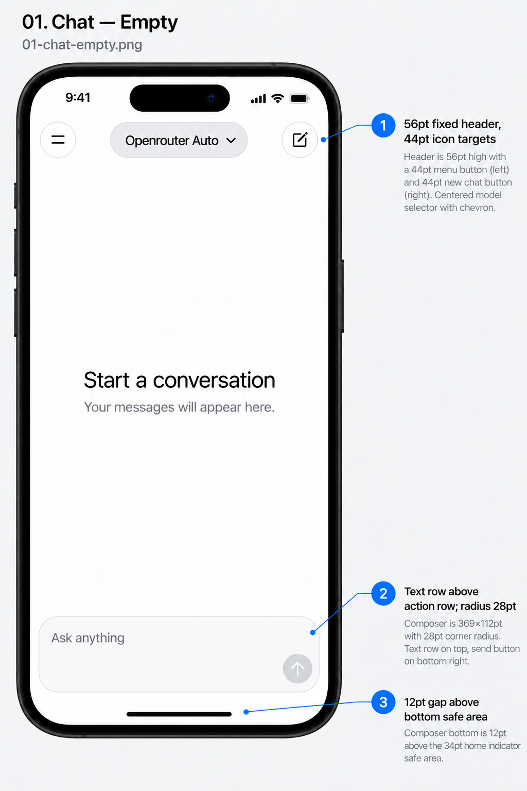

<!doctype html>
<html lang="en">
  <meta charset="utf-8" /><meta name="viewport" content="width=device-width,initial-scale=1" /><title>
    iOS Chat UI Design</title
  ><style>
    body {
      margin: 0;
      background: #f2f2f7;
      color: #111;
      font: 16px system-ui;
    }
    header {
      position: sticky;
      top: 0;
      background: white;
      padding: 12px 20px;
      display: flex;
      gap: 16px;
      align-items: center;
      flex-wrap: wrap;
      border-bottom: 1px solid #d1d1d6;
    }
    select,
    button {
      font: inherit;
      padding: 10px;
      border: 1px solid #d1d1d6;
      border-radius: 8px;
      background: white;
      min-height: 44px;
    }
    main {
      text-align: center;
    }
    img {
      display: block;
      width: min(100%, 1024px);
      height: auto;
      margin: auto;
    }
    a {
      color: #0055b3;
    }
  </style>
  <header>
    <strong>iOS chat beta</strong><button id="prev" aria-label="Previous mockup">←</button
    ><select id="state" aria-label="Choose mockup">
      <option value="01-chat-empty.png">01 · Chat — empty</option>
      <option value="02-chat-populated.png">02 · Chat — populated</option>
      <option value="03-chat-keyboard-empty.png">03 · Chat — focused empty</option>
      <option value="04-chat-keyboard-multiline.png">04 · Chat — multiline</option>
      <option value="05-chat-sending.png">05 · Chat — sending</option>
      <option value="06-chat-send-error.png">06 · Chat — send error</option>
      <option value="07-model-menu.png">07 · Model menu — selected</option>
      <option value="08-drawer-selected.png">08 · History — selected</option>
      <option value="09-drawer-empty.png">09 · History — empty</option>
      <option value="10-drawer-loading.png">10 · History — loading</option>
      <option value="11-drawer-error.png">11 · History — error</option>
      <option value="12-history-actions.png">12 · History — actions</option>
      <option value="13-rename-keyboard.png">13 · Rename — editing</option>
      <option value="14-rename-disabled.png">14 · Rename — invalid</option>
      <option value="15-delete-alert.png">15 · Delete — confirmation</option>
      <option value="16-settings-empty.png">16 · Settings — empty / local only</option>
      <option value="17-settings-populated.png">17 · Settings — populated</option>
      <option value="18-settings-keyboard.png">18 · Settings — keyboard</option>
      <option value="19-settings-validation.png">19 · Settings — validation</option>
      <option value="20-settings-saving.png">20 · Settings — saving</option>
      <option value="21-import-picker.png">21 · Import — picker</option>
      <option value="22-import-loading.png">22 · Import — reading</option>
      <option value="23-import-error.png">23 · Import — error</option>
      <option value="24-import-success.png">24 · Import — success</option>
      <option value="25-settings-save-error.png">25 · Settings — save error</option>
      <option value="26-drawer-large-text.png">26 · History — large text</option>
      <option value="27-chat-long-draft.png">27 · Chat — long draft</option>
      <option value="28-settings-saved.png">28 · Settings — saved</option>
      <option value="29-history-mutation-error.png">29 · History — mutation error</option>
      <option value="30-chat-missing-key.png">30 · Chat — API key absent</option>
      <option value="31-chat-edit-resend.png">31 · Chat — edit and resend</option>
      <option value="32-chat-scroll-latest.png">32 · Chat — scroll to latest</option>
      <option value="33-chat-scroll-latest-keyboard.png">33 · Chat — scroll to latest / keyboard</option>
      <option value="34-settings-secret-visible.png">34 · Settings — secret revealed</option>
      <option value="35-chat-s3-save-error.png">35 · Chat — S3 mirror error</option></select
    ><button id="next" aria-label="Next mockup">→</button><a href="visual-spec.md">Visual specification</a>
  </header>
  <main></main>
  <script>
    const select = document.querySelector('#state'),
      image = document.querySelector('#screen')
    function show() {
      image.src = 'mockups/' + select.value
      image.alt = select.selectedOptions[0].text
      document.querySelector('#prev').disabled = select.selectedIndex === 0
      document.querySelector('#next').disabled = select.selectedIndex === select.options.length - 1
    }
    select.onchange = show
    document.querySelector('#prev').onclick = () => {
      select.selectedIndex--
      show()
    }
    document.querySelector('#next').onclick = () => {
      select.selectedIndex++
      show()
    }
    show()
  </script>
</html>
